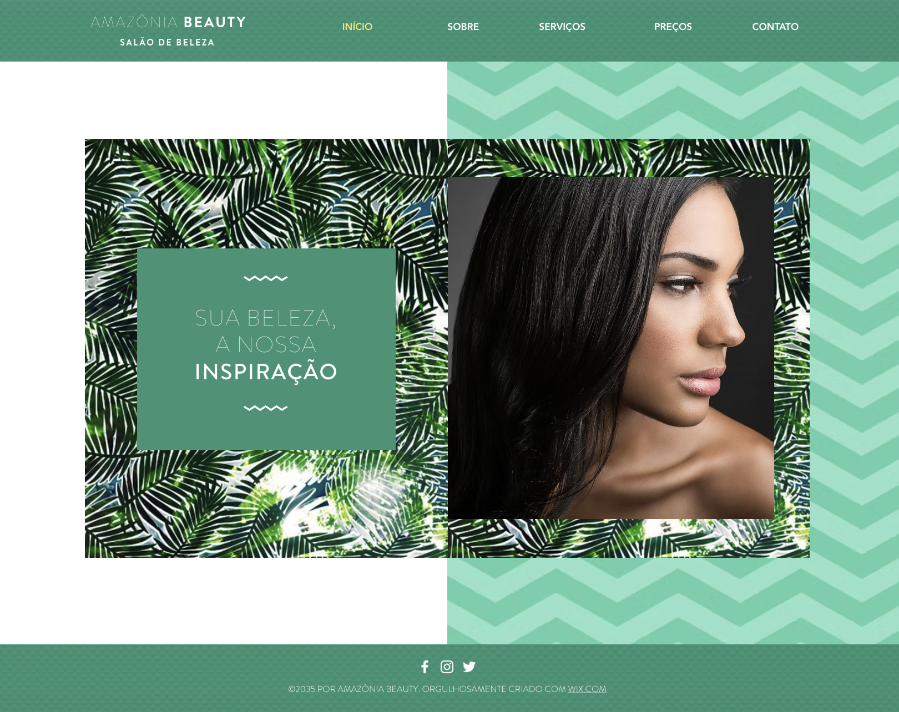
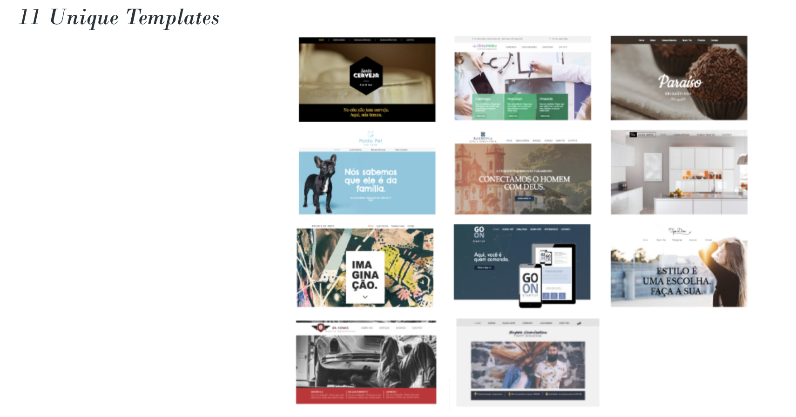
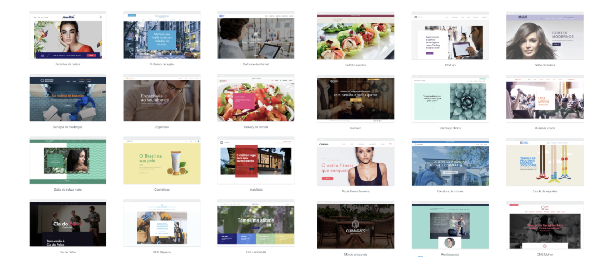

Wix.com / 2013–18
Brazil was one of Wix's largest markets — 11 million users, 2nd largest number of free users, 3rd largest number of premium subscribers — yet had zero localised templates. I led the strategy and execution to fix that.
The process combined local market research, trend analysis, Brazilian search terms, and Wix performance data to identify exactly what templates were needed. From there I directed the design and content production of templates built specifically for the Brazilian market — combining local cultural relevance with Wix's design standards.


